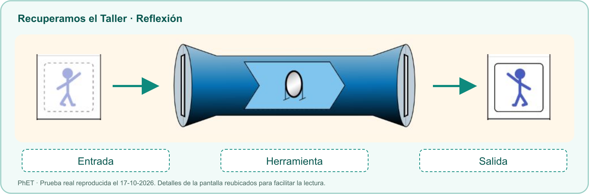

Una entrada, una transformación y una salida
En el simulador, una imagen entra en el tubo, una herramienta actúa sobre ella y se obtiene una imagen de salida.

| Qué observas | Dónde y qué significa |
|---|---|
| Entrada | La imagen que introduces en el tubo, desde la columna de la izquierda. |
| Transformación | Lo que hace la herramienta al actuar sobre la imagen de entrada. En el ejemplo, refleja la imagen de izquierda a derecha. |
| Salida | La imagen que obtienes después de la transformación, a la derecha del tubo. |
Para comparar dos pruebas
Mantén la misma herramienta durante las dos pruebas. Cambia la imagen de entrada y observa la salida que se obtiene en cada caso.